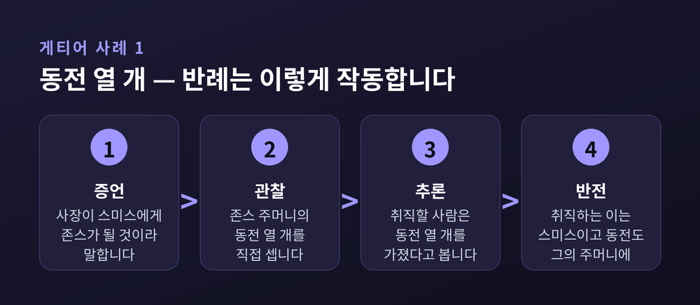

이번 글에서는 게티어 문제를 정리해 보겠습니다. 1963년, 세 쪽짜리 논문 한 편이 '안다는 것'의 오래된 공식을 무너뜨렸습니다. 그 뒤 60년 넘게 이어진 수리 작업이 왜 아직도 끝나지 않았는지까지 따라가 보려 합니다.
무언가를 안다고 말하려면 무엇이 갖춰져야 할까요. 20세기 중반까지 인식론이 붙들고 있던 답은 세 조건이었습니다.
첫째, 그것이 참이어야 합니다. 거짓을 알 수는 없습니다.
둘째, 그것을 믿어야 합니다. 믿지 않는 것을 안다고 하기는 어렵습니다.
셋째, 그 믿음이 정당화되어야 합니다. 좋은 근거나 합당한 추론이 뒷받침해야 한다는 뜻입니다.
이 셋을 묶어 '정당화된 참인 믿음(Justified True Belief)', 줄여서 JTB라고 부릅니다.
세 번째 조건은 왜 필요할까요. 스탠퍼드 철학백과가 드는 예가 간명합니다. 윌리엄이 동전을 던지면서 아무 근거 없이 뒷면이 나오리라 확신했다고 해 봅시다. 실제로 뒷면이 나왔다면 그의 믿음은 참입니다. 하지만 우리는 그가 알았다고 말하지 않습니다. 요행수는 지식이 아니기 때문입니다.
이 통찰의 뿌리는 멀리 플라톤까지 닿습니다. 『테아이테토스』에서 소크라테스는 '참인 의견'만으로는 지식이 되지 못한다고 지적합니다. 변호사가 궤변으로 배심원을 설득해 마침 참인 믿음을 갖게 했다면, 그 믿음은 근거가 부실해 지식이 되지 못한다는 것입니다.
다만 한 가지는 짚어야겠습니다. 플라톤이 JTB를 지식의 정의로 못 박은 것은 아닙니다. 『테아이테토스』는 이 정의를 검토하다 결론 없이 끝납니다. 정확히 말하면 JTB는 오랜 세월 이어진 흐름이 20세기에 다다른 표준적 정식에 가깝습니다.
1963년, 웨인주립대에 있던 에드먼드 게티어가 학술지 『Analysis』 23권 6호에 짧은 글을 실었습니다. 제목은 「정당화된 참인 믿음은 지식인가?」. 121쪽에서 시작해 123쪽에서 끝나는, 본문 세 쪽짜리 논문이었습니다.
그가 한 일은 단순합니다. 세 조건을 모두 만족하는데도 도무지 지식이라 부를 수 없는 상황을 두 개 지어냈습니다.
첫 번째 사례를 따라가 보십시오.
스미스와 존스가 같은 자리에 지원했습니다. 회사 사장이 스미스에게 말합니다. "존스가 그 자리를 얻게 될 겁니다." 스미스는 또 존스의 주머니에 동전이 열 개 들어 있다는 사실을 직접 세어 확인했습니다.
여기서 스미스는 결론을 하나 끌어냅니다. "그 자리를 얻게 될 사람은 주머니에 동전 열 개를 갖고 있다."
이것은 추측이 아닙니다. 사장의 증언이 있고, 자기 눈으로 센 관찰이 있고, 그 둘을 잇는 신중한 추론이 있습니다. 어느 모로 보나 잘 정당화된 믿음입니다.
그런데 사정이 이렇습니다. 그 자리를 얻는 사람은 존스가 아니라 스미스 자신입니다. 그리고 스미스의 주머니에도 동전이 정확히 열 개 들어 있습니다.
스미스의 믿음은 참이 되었습니다. 다만 그가 생각한 이유로 참이 된 것이 아닙니다. 그 믿음을 참으로 만든 두 사실 중 어느 것도 스미스는 알지 못했습니다.
그는 안다고 할 수 있을까요. 게티어는 아니라고 봤고, 그 뒤 대부분의 인식론자가 같은 판단을 내렸습니다.

두 번째 사례는 더 얄궂습니다. 게티어의 원문 표현을 따라가 보겠습니다.
스미스에게는 "존스가 포드를 소유하고 있다"는 강한 증거가 있습니다. 그에게는 브라운이라는 친구도 있는데, 어디 있는지는 전혀 모릅니다.
스미스는 지명 셋을 완전히 무작위로 고릅니다. 그리고 이런 명제들을 만듭니다.
'또는'으로 이어진 문장은 둘 중 하나만 참이어도 전체가 참입니다. 앞부분에 강한 증거가 있으니, 스미스는 세 문장 모두를 믿는 데 완전히 정당화되어 있습니다.
이제 두 가지가 더해집니다. 존스는 사실 포드를 소유하고 있지 않고 렌터카를 몰고 있습니다. 그리고 순전한 우연으로, 브라운은 정말 바르셀로나에 있습니다.
두 번째 문장은 참이 되었습니다. 스미스가 근거로 삼은 앞부분이 아니라, 그가 손가락으로 아무렇게나 짚은 뒷부분 덕분에 말입니다.
인터넷 철학백과는 모든 게티어 사례를 관통하는 두 요소를 짚습니다.
하나는 가류성입니다. 정당화가 훌륭하되 완벽하지는 않습니다. 좋은 근거이지만 믿음이 틀릴 가능성을 완전히 봉쇄하지는 못합니다.
다른 하나는 운입니다. 그 가능성이 실현되지 않고, 믿음이 참이 되는 과정에 뚜렷한 행운이 끼어듭니다.
정확히 말하면 어긋남이 두 번 일어납니다. 증거가 겨냥한 표적이 빗나가고, 전혀 다른 곳에서 우연히 참이 채워집니다. 이 이중 구조가 게티어 문제의 엔진입니다.
흥미로운 점은 이런 반례가 1963년에 처음 나온 것이 아니라는 사실입니다. 8세기 인도의 불교 인식론자 다르모타라는 사막의 신기루 사례를 남겼습니다. 저기 물이 있다고 믿는데, 정작 그 자리 아래에 진짜 물이 숨어 있는 경우입니다. 14세기 이탈리아의 페트루스 만투아누스도, 1923년의 버트런드 러셀도 같은 골격의 이야기를 적었습니다. 러셀의 것은 '멈춘 시계'로 알려져 있습니다. 멈춘 시계를 보았는데 마침 그 시계가 가리키는 시각이 맞는 순간이었다면, 참인 믿음은 얻겠지만 안다고 할 수는 없다는 것입니다.
그러니 게티어의 공은 반례를 처음 만든 데 있지 않습니다. 표준 정식을 정면으로 겨냥했고, 그 시점에 학계 전체가 반응했다는 데 있습니다.
가장 먼저 나온 처방은 자연스러웠습니다. 조건 하나를 더 붙이자는 것입니다.
"그 믿음은 어떤 거짓으로부터도 추론되지 않았다."
게티어의 두 사례 모두 이 조건을 정면으로 어깁니다. 스미스는 "존스가 취직한다", "존스가 포드를 소유한다"는 거짓 명제를 딛고 올라섰습니다. 러셀의 멈춘 시계도 "이 시계는 정상 작동 중"이라는 거짓에 기대고 있습니다.
그럴듯해 보였습니다. 그런데 곧 막혔습니다.
칼 진네가 고안하고 앨빈 골드먼이 1976년에 소개한 사례가 결정적이었습니다. 어느 시골 마을의 도로변이 온통 헛간 파사드로 채워져 있습니다. 앞에서 보면 헛간이지만 옆으로 돌아가면 껍데기뿐인 구조물입니다. 헨리가 그 길을 지나가다 "저기 헛간이 있다"고 믿습니다. 그리고 하필 그가 본 것이 마을에 딱 하나 남은 진짜 헛간입니다.
헨리의 믿음은 참이고 정당화되어 있습니다. 그런데 어떤 거짓으로부터도 추론되지 않았습니다. 그는 그저 눈으로 봤을 뿐입니다.
리처드 펠드먼은 다른 방향에서 찔렀습니다. 스미스가 "존스가 취직한다"는 거짓 대신 "사장이 나에게 존스가 취직한다고 말했다"는 참을 믿는다고 해 봅시다. 이 참인 믿음도 똑같은 정도의 정당화를 제공합니다. 거짓 전제가 하나도 없는데 여전히 같은 곤경입니다.
게다가 이 처방을 엄격히 밀어붙이면 곤란해집니다. 우리 머릿속에는 늘 크고 작은 거짓이 섞여 있습니다. 거짓이 하나도 없어야 한다고 요구하면, 우리가 아는 것은 거의 남지 않습니다.
키스 레러와 토머스 팩슨은 1969년 『Journal of Philosophy』에 방향을 뒤집은 논문을 냈습니다. 제목이 곧 주장입니다. 「지식: 패배당하지 않은 정당화된 참인 믿음」.
앞선 처방이 증거에 '들어 있는' 거짓을 문제 삼았다면, 이쪽은 증거가 '놓치고 있는' 진실을 문제 삼습니다.
패배자란 이런 것입니다. 어떤 사실을 지금의 근거에 더했을 때, 그 근거가 심각하게 약해져 더는 지식을 떠받치지 못하게 된다면, 그 사실이 패배자입니다.
스미스의 경우 패배자는 뚜렷합니다. "내가 취직한다", "내 주머니에 동전 열 개가 있다"는 두 사실입니다. 이것들을 알았다면 상황은 달라졌을 것입니다.
다시 벽에 부딪힌 지점은 모호함이었습니다. 근거가 얼마나 약해지면 지식이 되기에 너무 약한 걸까요. 세계는 무한히 복잡하고, 우리 증거가 놓친 사실은 언제나 있습니다. 어디까지를 알아차렸어야 했는지 선을 그을 방법이 마땅치 않습니다. 이 문제는 레러와 팩슨 자신들도 인정한 대목입니다.
앨빈 골드먼은 1967년에 다른 각도를 제시했습니다. 문제는 인과라는 것입니다.
평범한 관찰 지식을 떠올려 보십시오. 눈앞의 사실이 내 눈에 들어오고, 그것이 믿음을 만들고, 그 믿음이 다시 그 사실을 보고합니다. 믿음을 참으로 만든 것과 믿음을 낳은 것이 같은 뿌리입니다.
스미스에게는 이 연결이 끊겨 있습니다. 믿음을 참으로 만든 것은 스미스의 취직과 스미스 주머니의 동전인데, 믿음을 낳은 것은 사장과의 대화와 존스 주머니 관찰입니다.
이 처방에도 구멍이 있었습니다. "2 더하기 2는 4"를 알 때, 수(數)가 내 믿음을 인과적으로 일으킬까요. 대부분의 인식론자는 아니라고 봅니다. 그렇다면 인과 이론은 경험적 지식에만 적용되는 반쪽 이론이 됩니다.
더 곤란한 것은 일탈적 인과 사슬입니다. 사장이 스미스가 취직할 예정이라는 걸 알고 장난삼아 거짓말을 했다고 해 봅시다. 이제 믿음을 참으로 만든 사실이 믿음의 인과 이력에 들어옵니다. 그런데도 대부분은 여전히 지식이 아니라고 판단합니다. 인과 사슬이 얼마나 비뚤어져야 너무 비뚤어진 것인지, 답이 없습니다.
정당화 자리에 '신뢰할 만한 인지 과정'을 앉히는 신빙론도 나왔습니다만, 가짜 헛간 앞에서 함께 무너집니다. 헨리의 시각은 일반적으로 신빙성이 높습니다. 그런데 그 마을에서는 지식을 만들어 내지 못합니다.
로버트 노직은 1981년 『철학적 설명』에서 조건을 반사실적으로 바꿔 걸었습니다. 민감성입니다.
"만약 그것이 거짓이었다면, 나는 그것을 믿지 않았을 것이다."
멈춘 시계 앞에서 이 조건은 잘 작동합니다. 시각이 달랐어도 나는 똑같이 믿었을 테니, 내 믿음은 민감하지 않습니다.
그런데 가짜 헛간에서 이상해집니다. 파사드가 언제나 초록색이고 진짜 헛간은 언제나 빨간색이라고 해 봅시다. 그러면 헨리의 "빨간 헛간이 있다"는 믿음은 민감합니다. 지식이 아닌데도 조건을 통과합니다.
더 큰 문제도 있었습니다. 민감성을 요구하면 "나는 내게 손이 있다는 것은 알지만, 내가 통 속의 뇌가 아니라는 것은 모른다" 같은 결론이 따라 나옵니다. 스탠퍼드 철학백과는 이를 '혐오스러운 연언'이라 부릅니다. 오늘날 대부분의 인식론자가 민감성 조건을 거부하는 주된 이유입니다.
어니스트 소사는 1999년 논문에서 방향을 뒤집었습니다. 안전성입니다.
"내가 그것을 믿었다면, 그것은 참이었을 것이다."
문장만 보면 민감성을 뒤집어 놓은 것 같지만, 반사실 조건문에서는 이 뒤집기가 성립하지 않습니다. 두 조건은 서로 다른 것을 요구합니다. 안전성은 이렇게 읽는 편이 낫습니다. 가까운 가능세계 어디에서도, 같은 방식으로 믿으면서 틀리는 일이 없어야 한다는 것입니다.
여기서도 물음이 남습니다. '가까운 가능세계'란 어디까지일까요. 팀 윌리엄슨은 이 유사성을 지식 개념에 기대어 규정합니다. 그의 말대로라면 안전성이 성립하는지를 알려면 먼저 지식이 성립하는지를 판정해야 합니다. 순서가 거꾸로입니다. 그렇다면 안전성으로 지식을 분석할 수는 없습니다.
소사는 나중에 아예 질문의 모양을 바꿉니다. 부품을 더 끼워 넣는 대신, 성공과 능력의 관계를 봅니다. 궁수의 비유가 유명합니다.
활을 쏘는 행위는 세 가지로 평가할 수 있습니다.
정확성. 화살이 과녁에 꽂혔는가.
능숙성. 그 쏨이 궁수의 기술을 드러냈는가.
적합성. 그 성공이 궁수의 기술을 드러냈는가. 다시 말해, 능숙했기 때문에 정확한가.
세 번째가 핵심입니다. 잘 쏜 화살이 바람에 밀려 빗나갔다가, 두 번째 돌풍에 떠밀려 과녁에 꽂혔다고 해 봅시다. 정확하고 능숙하지만 적합하지는 않습니다. 성공이 기술에서 나온 것이 아니기 때문입니다.
소사는 지식을 '적합한 믿음'으로 봅니다. 그리고 이 틀은 게티어 사례를 놀랄 만큼 깔끔하게 설명합니다. 존스의 렌터카라는 오도적 증거가 첫 번째 돌풍이고, 브라운이 우연히 바르셀로나에 있었다는 사정이 두 번째 돌풍입니다.
그런데 가짜 헛간이 또 나타납니다. 헨리는 신빙성 있는 지각 능력을 썼고 이번에는 맞혔습니다. 그렇다면 적합한 믿음이고, 지식이라고 판정해야 합니다. 직관과 어긋납니다.
소사 본인의 대응은 뜻밖입니다. 그는 총알을 뭅니다. 헨리가 실제로 안다고 인정하고, 다만 그가 '반성적 지식'이라는 더 값진 상태를 갖지 못했을 뿐이라고 설명합니다.
수십 년의 수리 작업을 지켜보던 린다 자그젭스키는 1994년 『The Philosophical Quarterly』에 근본적인 물음을 던집니다. 논문 제목이 그대로 결론입니다. 「게티어 문제의 불가피성」.
그가 내놓은 것은 새 이론이 아니라 조리법이었습니다. 게티어 사례를 만드는 방법입니다.
첫째, 주체가 정당화된 거짓 믿음을 갖되 새 조건도 만족하는 사례를 만든다.
둘째, 그 사례를 손봐서 믿음이 순전히 운으로 참이 되게 한다.
이렇게 하면 언제나 "직관적으로 지식이 아닌" 사례가 나옵니다.
자그젭스키는 앨빈 플랜팅가의 제안을 이 조리법으로 직접 해체해 보입니다. 플랜팅가는 "인지 기능이 적절한 환경에서 제대로 작동해야 한다"는 조건을 붙였습니다.
1단계. 메리는 시력이 좋습니다. 보통은 남편이 거실에 있다는 것을 그 시력으로 압니다. 하지만 그 능력이 무오류인 것은 아닙니다. 어느 날 남편과 몹시 닮은 시동생이 거실에 앉아 있고, 메리는 제대로 작동하는 눈으로 "남편이 거실에 있다"고 믿습니다. 거짓이니 지식이 아닙니다.
2단계. 같은 상황에 남편도 마침 거실에 있었다고 덧붙입니다. 이제 믿음은 참입니다. 그런데 1단계보다 조금도 더 지식답지 않습니다.
조리법이 통하는 이유는 간단합니다. 새로 붙인 조건이 참을 함축하지 않는 한, 그 조건과 참 사이에는 아주 작은 틈이 남습니다. 운은 그 틈으로 들어옵니다.
막다른 골목에서 나온 대응 중 하나는 방향 전환이었습니다.
팀 윌리엄슨은 2000년 『지식과 그 한계』에서 지식을 분석하려는 기획 자체가 잘못된 출발이었다고 말합니다. 지식이 시시해서가 아닙니다. 정반대입니다. 지식이야말로 가장 근본적인 상태 중 하나이므로, 더 근본적인 다른 개념들로 쪼개려는 시도가 방향을 잘못 잡았다는 것입니다.
그는 지식을 '가장 일반적인 사실적 심적 상태'로 놓습니다. 분석되는 자리가 아니라 분석하는 자리에 지식을 두자는 제안입니다. 흥미롭게도 그 역시 안전성 요건은 받아들입니다. 다만 그것이 지식의 정의를 이룬다고는 보지 않습니다.
한편 실험철학 쪽에서는 다른 물음이 나왔습니다. 게티어 사례에 지식이 없다는 직관은 정말 보편적일까요. 2001년 와인버그와 니콜스, 스티치는 대학 밖 사람들의 응답이 갈린다는 결과를 내놨습니다. 동아시아계와 인도 아대륙계 응답자가 게티어 사례를 '지식이 있는' 상황으로 보는 데 더 개방적이었다는 것입니다.
이후의 흐름은 반대쪽으로 기울었습니다. 여러 재현 연구가 원 결과를 재현하지 못했고, 2017년 마셰리 등이 『Noûs』에 발표한 대규모 조사는 브라질과 인도, 일본, 미국 네 문화권에서 같은 직관이 공통으로 확인된다고 보고했습니다. 연구자들은 이것이 선천적이고 보편적인 '핵심 통속 인식론'의 반영일 수 있다고 봅니다.
정리하면 이렇습니다. 직관은 문화를 넘어 꽤 견고합니다. 하지만 그 직관을 설명해 낼 정의는 여전히 없습니다. 견고한 감각과 명확한 정의는 별개의 문제입니다.
게티어라는 사람에 대해서도 한마디 덧붙이고 싶습니다.
그는 평생 논문 두 편과 서평 한 편만 발표했습니다. 모두 1960년대에 나왔습니다. 이후 그는 논리학과 의미론, 나중에는 양상 형이상학에 힘을 쏟았고, 자신이 낸 문제를 '푸는' 시도들에는 진지하게 관여하지 않았습니다. 매사추세츠대 추모글에 따르면, 그 논문의 반향에 가장 놀란 사람은 게티어 자신이었습니다.
웨인주립대에서 그와 동료로 지냈던 앨빈 플랜팅가는 이렇게 적었습니다. "이렇게 적은 페이지에서 이토록 많은 사람이 이토록 많이 배운 적은 없었다."
데이비드 루이스의 문장은 더 간결합니다. 철학 이론이 결정적으로 반박되는 일은 결코 없다고 쓴 뒤, 괄호를 열어 이렇게 덧붙였습니다. 거의 없다, 괴델과 게티어는 해냈을지도 모른다.
정리하면 이렇습니다.
게티어 문제는 아직 풀리지 않았습니다. 제4조건도, 인과도, 신빙성도, 민감성과 안전성도, 덕 인식론도 각자의 자리에서 한 번씩 막혔습니다. 대개 같은 곳에서 막혔습니다. 가짜 헛간, 그리고 '얼마나'라는 물음입니다.
그렇다고 이 60년이 헛돈 것은 아닙니다. 예전에는 지식을 세 부품의 조립으로 봤습니다. 지금은 그것을 능력과 성공의 관계로, 운의 구조로, 가능세계 사이의 거리로 봅니다. 답을 얻지는 못했지만 물음은 훨씬 정교해졌습니다.
어쩌면 이것이 게티어가 남긴 진짜 유산인지도 모릅니다. 우리가 매일 아무렇지 않게 쓰는 '안다'는 말 안에, 아직 아무도 밑바닥을 보지 못한 깊이가 있다는 사실 말입니다.
그래서 세 쪽짜리 논문 한 편이 아직도 읽을 가치가 있느냐고 물으신다면, 저는 그렇다고 답하겠습니다.